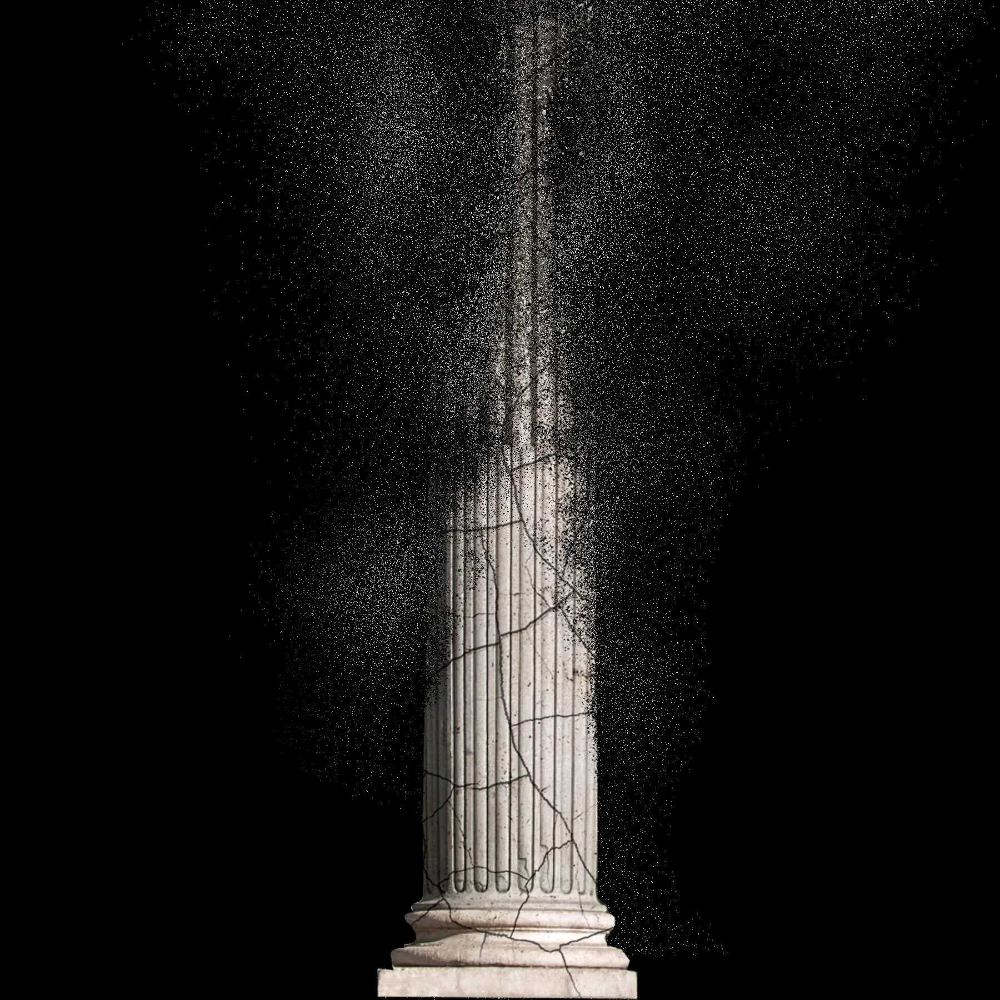
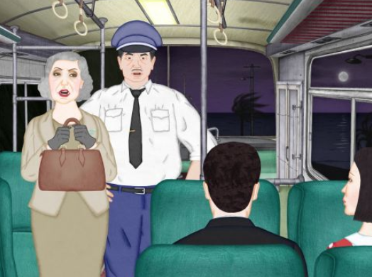

What an Unprecedented Supreme Court Leak Says About the Future of Abortion—and About Precedent Itself
The fragility of the right to an abortion has become synonymous with the fragility of the Court’s legitimacy.
May 4, 2022
Illustration by Nicholas Konrad / The New Yorker; Source photograph from Getty
The Court Chamber inside the Pantheon-like building of the Supreme Court of the United States is adorned with marble friezes depicting ancient lawgivers, including Hammurabi, Moses, and Confucius. To begin each session of the Court, at ten o’clock in the morning, the marshal strikes a gavel and commands, “All rise!” The audience goes silent and obeys. The nine Justices, in dark robes, then emerge from behind a heavy velvet curtain to take their seats on the elevated mahogany bench, as the marshal announces, “The Honorable, the Chief Justice and the Associate Justices of the Supreme Court of the United States. Oyez! Oyez! Oyez! All persons having business before the Honorable, the Supreme Court of the United States, are admonished to draw near and give their attention, for the Court is now sitting. God save the United States and this Honorable Court!” It is the closest thing we have, in the American civic sphere, to a papal audience.
The solemn ritual was supposed to have preceded the Supreme Court’s revelation from the bench of its decision in Dobbs v. Jackson Women’s Health Organization, the case about Mississippi’s ban on abortion after fifteen weeks of pregnancy. It still surely will, later this spring, but it will feel as if we’ve already been behind the curtain in Oz. On Monday, a leaked first-draft opinion by Justice Samuel Alito, writing for a majority, which was apparently circulated to all the Justices in February, was published by Politico. It states that the Court is overruling Roe v. Wade, which declared a constitutional right to an abortion, in 1973, and Planned Parenthood v. Casey, which reaffirmed Roe’s “central holding” under the Fourteenth Amendment’s due-process clause, in 1992.
The leak has launched abundant speculation about the leaker’s motives. Commentators have wondered whether leaking the draft was intended to corner a “squishy” conservative Justice into staying onboard with the majority or, alternatively, to create pressure to jump ship from the majority. It is difficult to fathom. But one effect of the leak is less speculative. At a time when the fragility of the right to an abortion has become synonymous with the fragility of the Court’s legitimacy, such a brazen breach of the Court’s process and decorum deflates its dignified mystery. It evinces contempt for the internal rules of the highest body that hands down rulings. Being unprecedented—I know of no past instance when the full text of an early draft opinion of the Court was made public—the leak seems to mock the current Court’s apparent disregard of precedent. It takes away the Court’s total control over what the public sees of its work. In short, it is like catching the Court in its underwear, before it has had the chance to don the garments that cover, even armor, its deliberations in secrecy. It implies that the Justices have no clothes.
Chief Justice John Roberts, who is reportedly not joining in to overturn Roe, issued a statement on Tuesday that the leak “was a singular and egregious breach of that trust that is an affront to the Court and the community of public servants who work here.” He directed the marshal to “investigate the source of the leak.” Perhaps the assault on the Court’s legitimacy through an act that invades its privacy norms, disrespects its dignified process, and disrupts its control over the timing of its decision effectively holds up a kind of perverse mirror to what Alito is doing in the draft: depriving people of privacy, dignity, and control in the important and serious decision to have a child when they are ready.
The content of Alito’s draft is exactly what I would expect of the long-pent-up takedown of Roe that generations of legal conservatives have been fantasizing about for decades. The draft’s account is a standard one, expressed without much restraint: that the Court in Roe arrogantly took the issue of abortion out of the democratic political processes in each of the states, where it belongs, and imposed on the nation a fake constitutional right in an “abuse of judicial authority” and exercise of “raw judicial power.” Alito writes, “Roe was egregiously wrong from the start. Its reasoning was exceptionally weak, and the decision has had damaging consequences. And far from bringing about a national settlement of the abortion issue, Roe and Casey have enflamed debate and deepened division. It is time to heed the Constitution and return the issue of abortion to the people’s elected representatives. . . . That is what the Constitution and the rule of law demand.”
The bulk of Alito’s draft is devoted to arguing that “a right to abortion is not deeply rooted in the Nation’s history and traditions” and that, to the contrary, “an unbroken tradition of prohibiting abortion on pain of criminal punishment persisted from the earliest days of the common law until 1973,” when Roe was decided. Before Roe, he writes, “there was no support in American law for a constitutional right to obtain an abortion. Zero. None.” He spends many pages describing laws that made abortion a crime, and then dozens of pages in an appendix laying out “statutes criminalizing abortion at all stages of pregnancy in the States existing in 1868,” the year the Fourteenth Amendment was ratified, and another appendix of statutes criminalizing abortion in the District of Columbia and in territories that became states. The appendices even take the trouble to italicize phrases tending to show that abortion was criminal regardless of the stage of pregnancy (though Alito acknowledges that, at the time, abortion before “quickening” was allowed in a number of states). All this is to prove that abortion cannot be a fundamental right guaranteed under the Constitution.
Given what we heard from the Justices at oral arguments in December, it is not surprising that five of them seemingly voted to overrule Roe and Casey. But, in the course of Alito’s argument that our legal tradition prior to Roe did not respect a right to abortion, what is striking is how far he goes to try to establish something more: that there is a strong legal tradition in our nation that has condemned abortion as the destruction of unborn life. By devoting so much of this draft to the view that the criminalization of abortion is deeply rooted in the nation’s history and traditions, Alito is setting up anti-abortion litigants to argue relatively soon that a fetus has a fundamental right to life that is protected by the Fourteenth Amendment’s guarantee that no state shall “deprive any person of life” without due process of law.
The Court has repeatedly said, in prior substantive due-process cases, that a fundamental right is one that is “deeply rooted in this Nation’s history and tradition” and “fundamental to our scheme of ordered liberty.” It is particularly telling that, rather than rejecting substantive due process, which conservatives have long reviled as a liberal invention untethered from the Constitution, Alito’s draft purports to scrap the abortion right as “not deeply rooted” while embracing a version of substantive due process that leaves room for anti-abortion advocates to claim a fetal right to life as “deeply rooted.” Alito also states that the overruling of Roe and Casey does not threaten “precedents that do not concern abortion,” including precedents establishing the right to gay sex and to same-sex marriage. But it is impossible to see how the regressive method he uses, framing “history and tradition” at such a low level of generality, would not have the effect of casting doubt on them.
If four other Justices end up joining this opinion, it will indicate change on the horizon that is far more radical than the overruling of Roe and Casey. Simply getting rid of those precedents would mean that roughly half the states would ban abortion, while the rest of the states would remain free to permit it. But an eventual finding of a constitutional right to fetal life would disallow abortion in every state. Alito’s leaked draft leaves no doubt that an expedited attempt to render abortion illegal throughout the entire nation as the vindication of fundamental—if fundamentalist—constitutional rights can be expected to arrive much sooner than we thought.
New Yorker Favorites
The book that inspired Disney’s “Bambi” is even darker than the cartoon—and has an unsettling message about humanity.
A Cambridge classicist takes on her sexist detractors.
Does wisdom really come from experience?
The trans swimmer who won too much.
The mind behind “Where the Wild Things Are.”
From 1938: Alfred Hitchcock’s many plans.
Sign up for our daily newsletter to receive the best stories from The New Yorker.
Jeannie Suk Gersen is a contributing writer to The New Yorker and a professor at Harvard Law School.
More:U.S. Supreme Court U.S. Constitution Women’s Rights Abortion Rights Roe v. Wade Samuel Alito
Read More
Culture
In Joe Hsieh’s “Night Bus,” a bus waylaid in the middle of the night becomes the backdrop for a violent outburst of hatred, love, and vengeance.
By The New Yorker
Culture
Michelle Coomber’s “Nsenene” stunningly captures the practice of grasshopper-catching in Uganda, and shows how the seemingly ethereal creatures form a part of the country’s diet and economy.
By The New Yorker
News
In Daniel Lombroso’s documentary, activists expose an ecocide at the U.S.-Mexico border that could alter the evolutionary future of North America.
By The New Yorker
Culture
In “The Reëducation of Ji Zhihao,” the filmmaker Tian Macleod Ji follows his uncle to China’s countryside, on a journey to explore both the tender bonds and the painful memories of the nation’s Maoist past.
By The New Yorker
Sections
More
© 2022 Condé Nast. All rights reserved. Use of this site constitutes acceptance of our User Agreement and Privacy Policy and Cookie Statement and Your California Privacy Rights.The New Yorker may earn a portion of sales from products that are purchased through our site as part of our Affiliate Partnerships with retailers. The material on this site may not be reproduced, distributed, transmitted, cached or otherwise used, except with the prior written permission of Condé Nast. Ad Choices

New Yorker Favorites Life with Half a Brain The Glossary of Happiness The Case Against Civilization What Vivian Maier Saw